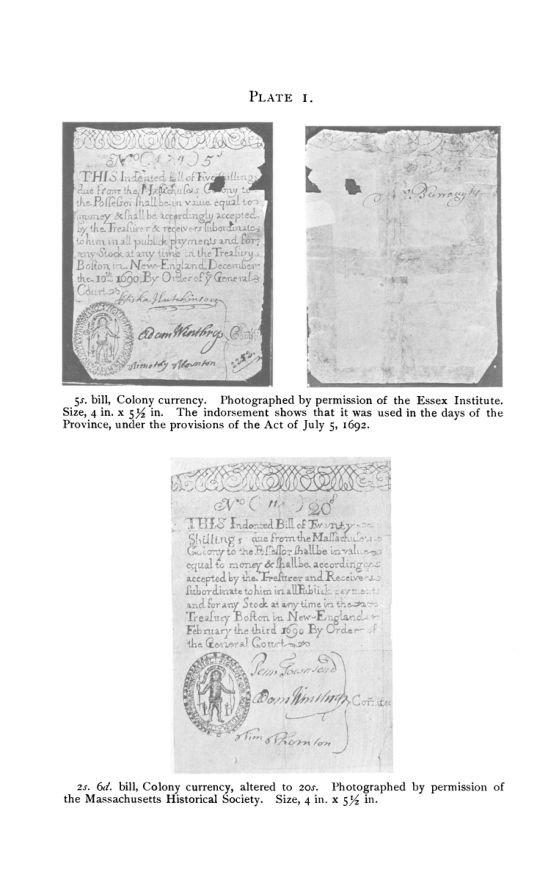

Davis, 1900: o papel que Massachusetts imprimiu para pagar a guerra
Leitura: 10 min
Em 1690, sem dinheiro para pagar os soldados de uma expedição fracassada, Massachusetts imprimiu cédulas. Andrew McFarland Davis reconstituiu 60 anos dessa experiência, da depreciação ao resgate em prata de 1750.


Boston, 19 de novembro de 1690. Sir William Phips volta de Quebec com a notícia do fracasso. A expedição partira certa de que o butim francês pagaria as despesas; o tesouro estava vazio e os soldados, segundo Hutchinson, à beira do motim por falta de soldo. Doze dias antes, a General Court tentara levantar um empréstimo de três ou quatro mil libras, dando como garantia metade dos impostos e a parte da colônia no saque de Quebec. Sem saque, não houve empréstimo.
Em 10 de dezembro, a assembleia mandou imprimir cédulas. Cada uma se dizia devida pela colônia ao portador, de valor igual ao dinheiro, e aceita pelo tesouro em todos os pagamentos públicos. O teto inicial, de £ 7.000, caiu em fevereiro seguinte; em 21 de maio de 1691 foi fixado em £ 40.000. Samuel Sewall resumiu o motivo numa frase. As cédulas, escreveu, foram feitas
“não por falta de dinheiro, mas por falta de dinheiro no tesouro” (“not made for want of money, but for want of money in the treasury”)
A cena abre Currency and Banking in the Province of the Massachusetts Bay, de Andrew McFarland Davis, de Cambridge, Massachusetts. A primeira parte, dedicada à moeda, saiu em dezembro de 1900 como volume 1, nº 4, da terceira série das Publications of the American Economic Association, em 473 páginas. No prefácio, Davis conta que chegou ao tema por um desvio: Charles F. Dunbar, de Harvard, perguntou-lhe se havia papéis nos arquivos de Massachusetts sobre o Land Bank de 1740. O banco ficou para a segunda parte; a moeda veio antes.
Foi mesmo uma experiência pioneira?
Davis é cuidadoso. Registra que a China já conhecera papel-moeda e que há relatos de usos temporários em Leiden, no século XVI, e em Chipre, mas argumenta que nada disso estava ao alcance dos financistas da Europa ou da Nova Inglaterra. Para ele, o único êxito acessível aos ingleses em dar a um povo papel-moeda como meio circulante foi o de Massachusetts. Quando o Banco da Inglaterra foi fundado, em 1694, o sucesso da colônia estava praticamente assegurado, e Davis admite que o exemplo pode ter influenciado os fundadores.
O começo foi difícil. Um oficial da expedição escreveu que soldados e marinheiros não obtinham pelas cédulas mais que metade do valor; outro autor fala em 12 ou 13 xelins por libra. Cotton Mather atribui a desconfiança ao medo de que o governo provisório, instalado após a queda de Andros, fosse derrubado. A resposta foi um prêmio pago pelo próprio tesouro. Em pouco tempo, as cédulas circulavam ao par.
Como uma promessa de curto prazo virou dívida permanente?
A lógica original era fiscal e simples. Cada emissão vinha com um imposto designado para recolhê-la; de volta ao tesouro, a cédula se extinguia. Em 1702 a província adotou um modelo próprio de cédula e, no mesmo ano, começou a adiar os impostos de resgate: um ano, depois dois em 1704, três em 1707, cinco em 1709, seis em 1711, sete em 1714. Em 1730, £ 13.000 foram emitidas para só serem recolhidas em 1741.
Em 1714, segundo Davis, a receita tributária estava empenhada, no todo ou em parte, por seis anos à frente. O dilema aparece cedo nos embates entre governadores e representantes. Se as cédulas não fossem recolhidas como prometido, a confiança caía; se fossem, o meio circulante encolhia de repente, porque a prata já tinha saído da província. A saída recorrente foi adiar e emitir mais. Davis observa que, sempre que um fundo era recolhido para sustentar a confiança, esperava-se uma nova emissão para tapar o buraco.
Quanto valia o xelim de papel?
Davis reúne várias séries de época, que nem sempre coincidem: as do médico William Douglass, a do xerife Edward Winslow, a do American Negotiator, de Wright, e uma anotação de Thomas Hutchinson num almanaque. Por volta de 1700, a onça de prata valia cerca de 7 xelins em moeda local. Em 1749, valia 60.
Os números têm tradução social. Em 1716, o governador Shute advertia que parte da comunidade se protegia subindo preços, enquanto a outra parte sofria sem remédio. Hutchinson aponta os credores, o clero, os assalariados, as viúvas e os órfãos que viviam de juros e viram sua renda reduzida à metade do valor anterior. E acrescenta:
“A influência que uma moeda ruim exerce sobre a moral do povo é maior…” (“The influence a bad currency has upon the morals of the people is greater…”)
Douglass deu o exemplo do carpinteiro de Boston, e escolheu a manteiga porque era o mantimento que subira de forma mais regular. Com um dia de trabalho, o carpinteiro comprava 15 libras de manteiga em 1712; em 1739, só 7. Pior: metade do salário costumava vir em ordens contra lojas, as “shop notes”, que davam direito a mercadorias cobradas acima do preço em dinheiro.
Quem pagava a conta da emissão dos vizinhos?
O capítulo mais analítico, “A lição de economia”, testa uma regra de Douglass. Davis monta uma tabela com o papel em circulação em toda a Nova Inglaterra e o preço da prata, e converte tudo em onças. Em 1700, havia cerca de £ 200.000 em prata; em 1739, £ 630.000 em papel valiam menos em prata do que aquela moeda original. A regra, nas palavras de Douglass:
“Quanto mais papel-moeda emitimos, menor se torna o valor real do nosso meio circulante” (“The more paper money we emit, our real value of currency or medium becomes less”)
A regra tem uma complicação que Davis faz questão de expor. Entre 1727 e 1741, pressionada pelo Board of Trade, Massachusetts reduziu as próprias cédulas em circulação e, ainda assim, a prata subiu de 16 para cerca de 29 xelins. A explicação estava em Rhode Island, que emitia papel em empréstimos de longo prazo; Douglass estimava que dois terços dele circulavam em Massachusetts. Davis descreve a província como castigada pelos pecados do vizinho e atribui a situação à insistência dos comerciantes em aceitar aquelas cédulas.
Como se sai de uma moeda depreciada?
A inflação final veio com o governador Shirley e a guerra. Massachusetts financiou com novas emissões sua parte na expedição de 1745 contra Louisbourg, na ilha do Cabo Bretão. Hutchinson via nelas um meio fácil de pagar despesas públicas, lição que o próprio conselho de guerra em Louisbourg aprendeu ao emitir cédulas suas. A saída veio de fora: o Parlamento britânico concedeu £ 183.649 esterlinas para reembolsar os gastos da expedição.
A lei de janeiro de 1749, baseada no projeto de Thomas Hutchinson, decidiu usar o dinheiro para recolher o papel. A troca foi fixada em 50 xelins a onça, isto é, sete e meio em papel por um em prata, abaixo dos cerca de 60 do mercado. A partir de 31 de março de 1750, os contratos passariam a ser em prata a 6s. 8d. a onça, e ficava proibido receber cédulas das colônias vizinhas.
Não deu para tudo. Pela taxa fixada, a moeda importada resgatava apenas cerca de £ 1,75 milhão em cédulas de valor antigo. Em 1751, a província pagou parte dos resgates com um oitavo em moeda e sete oitavos em certificados a 6% de juros; Hutchinson e Andrew Oliver protestaram contra uma versão anterior da lei, que dava aos certificados curso forçado. Ainda assim, segundo Hutchinson, o choque temido no comércio não veio: uma moeda boa tomou o lugar de uma ruim sem que se notasse. Um baladista da época lamentou a morte do “Sr. Old Tenor”, em 31 de março de 1750.
Em 25 de junho de 1751, o Parlamento aprovou a lei que restringia as cédulas de Rhode Island, Connecticut, Massachusetts e New Hampshire e proibia, a partir de 29 de setembro daquele ano, que tivessem curso legal. Num dos capítulos finais, Davis liga a disputa monetária à política: as brigas entre representantes e governadores reais sobre a moeda ensinaram os colonos a criticar seus governantes e a apoiar seus deputados, num processo lento que preparou a independência.
Na minha leitura
Na minha leitura, o valor do livro está no método. Davis não se contenta com as conclusões de Hutchinson e Douglass, que viveram a disputa e tomaram partido. Volta às atas do Conselho e da Câmara, confronta séries de preços que não coincidem e diz onde cada uma falha. Quando a regra de Douglass parece funcionar, procura as exceções; quando encontra Rhode Island, refaz a conta. É história monetária feita como auditoria.
A lição econômica é a da dominância fiscal antes de o termo existir. O papel de 1690 funcionou enquanto era pouco e tinha imposto marcado para recolhê-lo; deixou de funcionar quando o resgate passou a ser adiado ano após ano para financiar guerras. O livro mostra ainda um problema mais sutil: numa área monetária comum, quem emite mais exporta inflação para o vizinho. E a estabilização de 1750 só foi possível com uma transferência externa e uma taxa de conversão fixada em lei, e mesmo assim exigiu converter parte do resgate em dívida com juros.
Glossário
- Cédulas de crédito (bills of credit)
- papel emitido pelo governo como certificado de dívida ao portador, aceito no pagamento de impostos.
- Lawful money
- unidade de conta de Massachusetts, cerca de 25% abaixo do esterlino; nela a onça de prata valia legalmente 6s. 8d.
- Old tenor e new tenor
- modelos de cédula; as de “novo teor”, a partir de 1737, valiam por lei três (depois quatro) vezes as antigas.
- Peça de oito (piece of eight)
- moeda de prata espanhola, o “dólar espanhol”, base da circulação metálica nas colônias.
- Câmbio esterlino
- preço, em moeda local, de 100 libras esterlinas pagáveis em Londres; o par era 133.
- Curso legal (legal tender)
- obrigação legal de aceitar a moeda no pagamento de dívidas.
- Retomada dos pagamentos em espécie
- volta à conversibilidade, com o papel trocado por moeda metálica a uma taxa fixada.
- Dominância fiscal
- situação em que a emissão de moeda fica subordinada ao financiamento do governo.
Fontes
- Currency and Banking in the Province of the Massachusetts-Bay: Part I. Currency (pp. 1–473). JSTOR · Internet Archive (PDF)
- Sumário da edição no JSTOR: Publications of the American Economic Association, 3ª série, vol. 1, nº 4.
Documento em domínio público (EUA, publicado antes de 1931), via JSTOR Early Journal Content e Internet Archive. Resumo e comentário do autor deste site, sem afiliação com a American Economic Association. Encontrou um erro? Escreva: a correção é publicada no próprio texto, com data.
← Nº 55 · Quem paga o império? As finanças coloniais em dez sistemas fiscais Nº 57 · Detroit, 1900: a concorrência, as concessionárias e o negócio de Veblen →